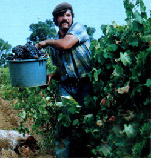
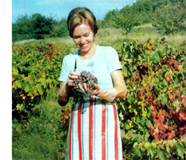
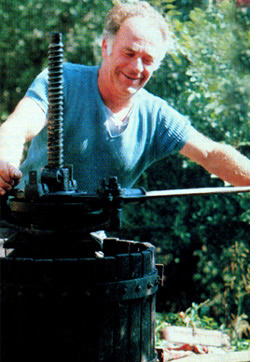
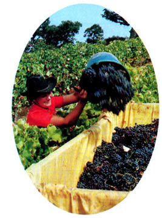
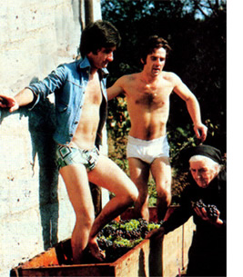

You may sleep in an outbuilding with other vendangeurs or, if you're lucky, you might be given a room in the f armer's house. Either way, if you're not allergic to hard work and you enjoy meeting warm and generous people, le vendange could be your ticket to a Europe you didn't even know existed!
For more than 2,000 years, le vendange (the gathering in of grapes) has been one of France's most widely noted late summer and early autumn traditions. We all know that.
But did you know that you can actually get paid ($15 to $25 a day, plus-in most cases-a daily bottle of wine) for taking part in this almostmythical harvest? Or that you can do so without going through the hassles of obtaining a work permit . . . or learning to speak French . . . or even writing ahead to arrange for a job before you get there?
Well, you can. I know because I spent several happy weeks last fall on Corsica (a sunny French island in the Mediterranean) and in Provence (a charming mountainous region of southern France) picking grapes. And, although I worked, I enjoyed every minute of it. By the time the harvest was over, I had earned enough money to pay my way to Nairobi, Kenya (yes, in Africa) where I am now just as happily writing this article. I see no reason-now that the grape season is once again upon uswhy you (male or female) shouldn't be able to work your way through southern France during this fall of 1977 . . . just as I did in the autumn of 1976.
This pleasant (for anyone who yearns to travel but who has more ambition than money) state of affairs is one of the few silver linings in the dark cloud of agribiz "progress" now sweeping the world. Just as millions of smaller farmers have been squeezed off the land in the United States and many other nations, most of France's peasants are being pushed from their independent country lives to factory jobs and row houses in the cities.
The increasingly few farmers left behind have, for the most part, successfully replaced their vanishing field workers with machines. For the most part, that is. Because, while machinery can indeed do many agricultural jobs faster and easier and less expensively than people and animals can handle the same tasks (at least as long as the petroleum holds out!), there is still no really satisfactory replacement for the human eye and hand when it comes to picking grapes.
To be sure, it's no longer unusual to spot the odd mechanical picker lumbering through some of the vineyards of southern France. To produce the very best wines, however -the wines for which France is so justly famous-grapes must still be sorted by eye and plucked by hand.
Which, of course, creates a tremendous seasonal demand for field laborers. A demand that hardpressed farmers are anxious to fill in any way they can: with French dropouts and students . . . Arab and Iberian migrant workers . . . and almost anyone else (including you, if you want to get in on the action!) who turns up. My guess is that any reasonably sober warm body which wanders into southern France by the middle of September and makes an honest attempt at doing useful vineyard work should have absolutely no trouble staying continuously employed until late October. The demand for field hands is definitely there
Although I did my picking on Corsica and in Provence (as I've already mentioned), you might do even better than I've suggested if you zero in on one of France's really major wine districts . . . such as the Rhone Valley or Bordeaux. Then again, there may be an even simpler and more direct way for you to choose the part of France in which you'll try your hand as a grape picker: Just read the label on your favorite bottle of French wine very carefully . . . and then head straight for the village where it was produced.
And don't forget to take along some warm clothing and rain gear, including rubbers or waterproof boots. It sometimes gets cool and damp in the fall, you know . . . even in sunny southern France!
By scanning the travel ads in any big city newspaper or looking over the notices posted on college bulletin boards, you should be able to find a one-way charter or cheapo flight to Paris for about $200 . . . even during the "expensive" summer season. If you must buy an "ordinary" ticket, however, your best bet is to book a flight after September 1, when the prices come down.
EDITOR'S NOTE: A last-minute check before this issue went to press turned up these facts: After September 15, you should be able to fly from. New York City to Paris on any commercial airline for a round-trip Excursion (22-45 days) Fare of $487. Or, if you book passage 45 days in advance, you can make an APEX (Advanced Purchase EXcursion) New York to Paris flight for only $376 round trip, any time after September 1. By scouting around on your ownfor starters, send 50 cents to the Council on International Educational Exchange (CIEE), identify yourself as a student, and request a copy of the CIEE catalog of student flights and pricesyou may be able to come up with a bargain flight that costs even less and suits your purposes better. One final tip: You'll need only a valid passport to enter France and, of course, when asked the reason for your trip upon entry . . . you'll reply, "tourist".
In Paris you should buy the large Michelin map of France and a Michelin map of the region of the country to which you're headed. Your destination shouldn't be hard to reach by either train or bus, but hitchhiking in France can be more trouble than it's worth.
SPECIAL TIPS: A train ride to Bordeaux traverses the heart of France while the train or bus from Paris to Avignon follows the lovely Rhone Valley (you can get off almost anywhere and be in the midst of timeless wine country). Another nice route to follow runs from Paris to Orleans, then along the beautiful chateau-dotted Loire Valley west until you enter vineyard country.
If you don't have any particular village or farm in mind once you've reached the wine district of your choice, just stop off at any small town in the region and head for the farmers' cooperative. You'll probably be grabbed by a grower as soon as you announce that you're available for le vendange. If not, amble down to a respectable cafe and search out a compassionate-looking young French man or woman. (Young people are more likely to both speak English and have the latest information about le vendange.) Explain your situation. Your very first contact may well lead you to a farm-perhaps one belonging to his or her family-which needs vendangeurs.
EDITOR'S NOTE: Although the crime rate is drastically lower in the French countryside than in any major U.S. city-probably lower, in fact, than even in the relatively crime-free U. S. countryside-it does seem prudent here to caution you about naively climbing into a car with just any chance acquaintance in a foreign country who promises you a job. Exchange identifications with every new friend you make and then discreetly ask the cafe's manager, a local policeman, etc., about your new companion's background, reputation, and so on before climbing into that car. And leave word where you're going when you do climb in .
Working conditions on each farm and in each district are a little different. Pay will vary from $15 to $25 a day, depending on the region and on whether or not room and board are included. (Look for a farm where the food is included. It's worth a few less francs a day to feast for a month on the kind of French country cooking that I've been fed while picking grapes!) Most of the old-style farmers still throw in a daily bottle of homemade wine to "enliven the spirits of the vendangeurs".
You may find yourself working side by side with a Portuguese refugee from Angola, an Arab from Morocco earning money for his family back home, a law student from Sweden, or a New Age potter from an aristocratic Parisian family. I've picked with them all . . . as well as a cheerful Italian mother of five, a comical French troubador who sometimes brought his guitar into the fields, and a handful of that dying breed of French peasant who somehow belongs to another, more gentle, time. Language, by the way, isn't nearly the problem you think it might be among such a polyglot crew. Vendangeurs seem to have a glowing spirit which is shared in many ways each day.
Despite his initial skepticism (American grape pickers are still a largely untested commodity in France), the farmer you work for will be silently rooting for your success. But don't expect that success to just fall into your lap. I've bucked hay from Vermont to West Virginia, and even an endless afternoon of wet 45pound bales never made my back ache as much as my first 10hour day of le vendange. The first day is the hardest, though, and you soon get used to it.
The daily harvest begins early in the morning when the grass is still damp. You'll be given a pair of shears and a pail and the rest is pretty obvious. You can set your own pace, you'll be paid by the hour or per day (depending on "your" farm's policy), and nobody will ever tell you to stop eating grapes (although, after a full season of le vendange, you'll probably have had your fill of this particular fruit until at least the following year).
During your lunch break you may eat a sandwich on French bread or, if you're working at a "full board" farm, you'll be treated to a delicious downhome spread. Dinner in the evening will certainly be both abundant and memorable.
Few vendangeurs feel like staying up late at night . . . but if you play the guitar, flute, or banjo, be sure to bring it along. The French always have time for a song and they adore American folk music, blues, and bluegrass.
By late October, the harvest will all bein. But by then you'll have enough money in your pocket and you'll have gotten to know so many Europeans so well that you'll be ready to move on anyway.
After a farewell feast that will probably defy description, you'll sleep well, rise leisurely, and-perhapsspend a final day in "your" region of France picnicking up in the sunny autumn mountains. Then, after one last night of sound slumber on the farm you've come to know so well, you'll rise early and -several hundred dollars richer than when you came and with winter on the way-set out for the warmer climates of Morocco or the Greek Islands . . . where that grubstake can last a long, long time.
Or you may decide to accept the invitations you've received to stop by and visit some of the new friends you've made once they've returned to their homes all over Europe ( those visits can turn into a vacation that bears no resemblance at all to the packaged, plastic "tourist" trips that most of us settle for). Or perhaps you've become so attached to the rustic French countryside that you'd like to stay on and pick olives or prune cherry trees.
Once you've taken the first step and picked grapes for a month or more in southern France . . . almost anything is possible.
|
 |
 |
 |
|
 |
 |
|